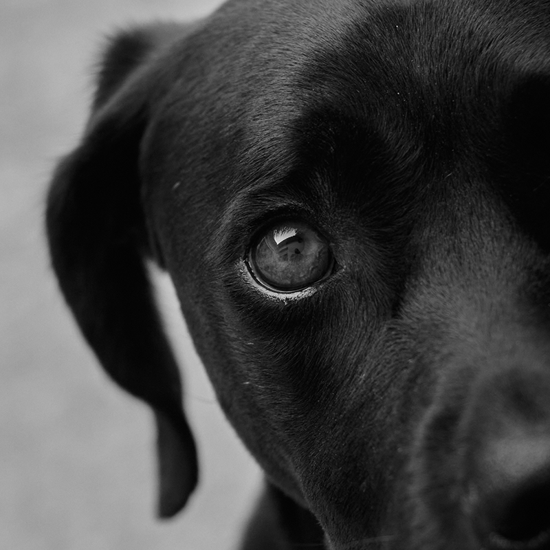
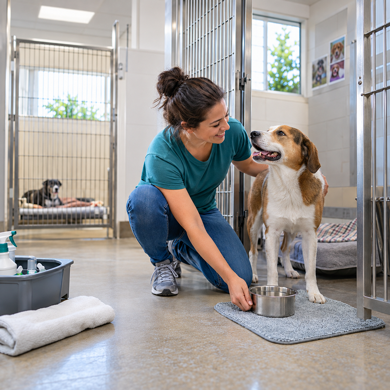

Twin Cities Animal Rescue
Find a new home for an animal in need today!
Featured Pet

Milo | Brown Tabby Cat
Our Impact

Making a Difference Together
- 500+ pets adopted each year
- 50+ active volunteers
- 50+ foster families
How You Can Help

Every Act of Kindness Helps
- Adopt a pet and give them a permanent home.
- Foster a pet while they wait for adoption.
- Volunteer your time at events and programs.
- Donate to support food, supplies, and veterinary care.
Mission Statement
We connect pets with safe, loving homes. We support animals and the people who care for them across the Twin Cities.